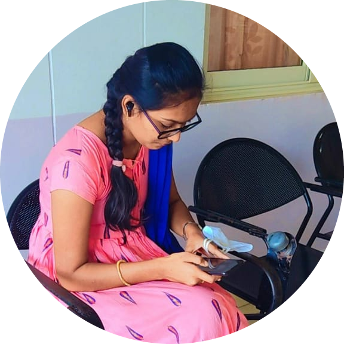

Ambati Kavitha

An UPSC Aspirant
I am an aspiring web developer and I always dreamt of becoming an IAS Officer.
Education
- Completed Secondary at Little Scholars The Global High School,Mydukur,Kadapa.
- Completed Senior Secondary at Narayana Junior College,Tirupati.
- Currently pursuing B.Tech degree at Vignan's Institute Of Information Technology,Duvvada,Visakhapatnam in the stream of Artificial Intelligence and Data Science.
Skills
- C Programming
- Python Programming
- Html
- CSS
- PHP
- Django
- MySQL
Interships
Django Web Developer
Intvice Technologies Pvt.Ltd
During a virtual internship, I worked as a Django developer, where I undertook the following projects:
- Hotel Management Project using Django
- Developed a comprehensive hotel management system utilizing the Django framework.
- Collaborated with a team to design and implement various features, including room booking, guest management, and billing.
- Utilized the IntelliJ IDEA platform for efficient project development and collaboration.
- Sheets Integration with SheetDB
- Created a project that involved connecting Google Sheets with the SheetDB API to automate data retrieval and manipulation.
- Implemented data synchronization and real-time updates between Google Sheets and the web application.
- Video Controller Project
- Designed and developed a video controller application, enabling users to manage and control videos through a user-friendly interface.
- Implemented various functionalities such as play, pause, rewind, and volume control.
These experiences provided me with valuable insights into software development, teamwork, and utilizing technology to solve real-world problems.
Academic/Personal Projects
Projects Done:
Others
My Hobbies
Contact Me